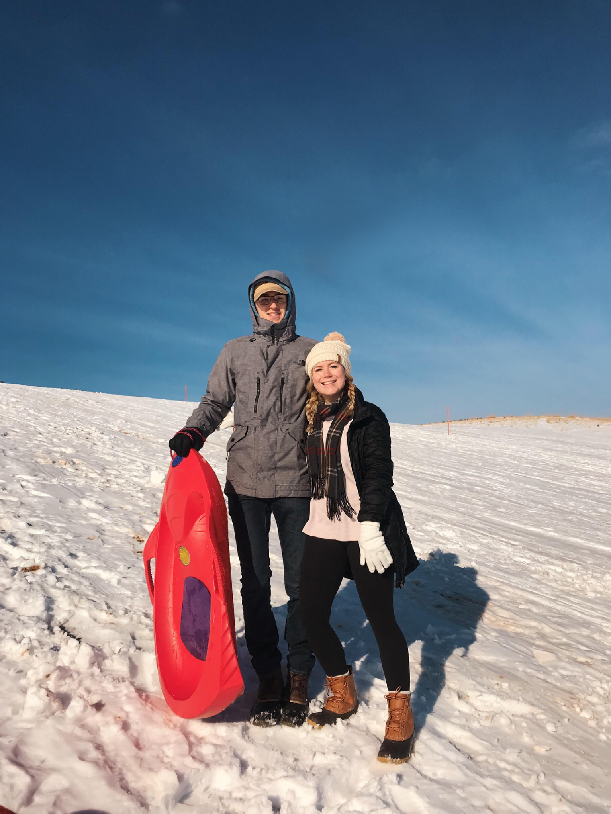
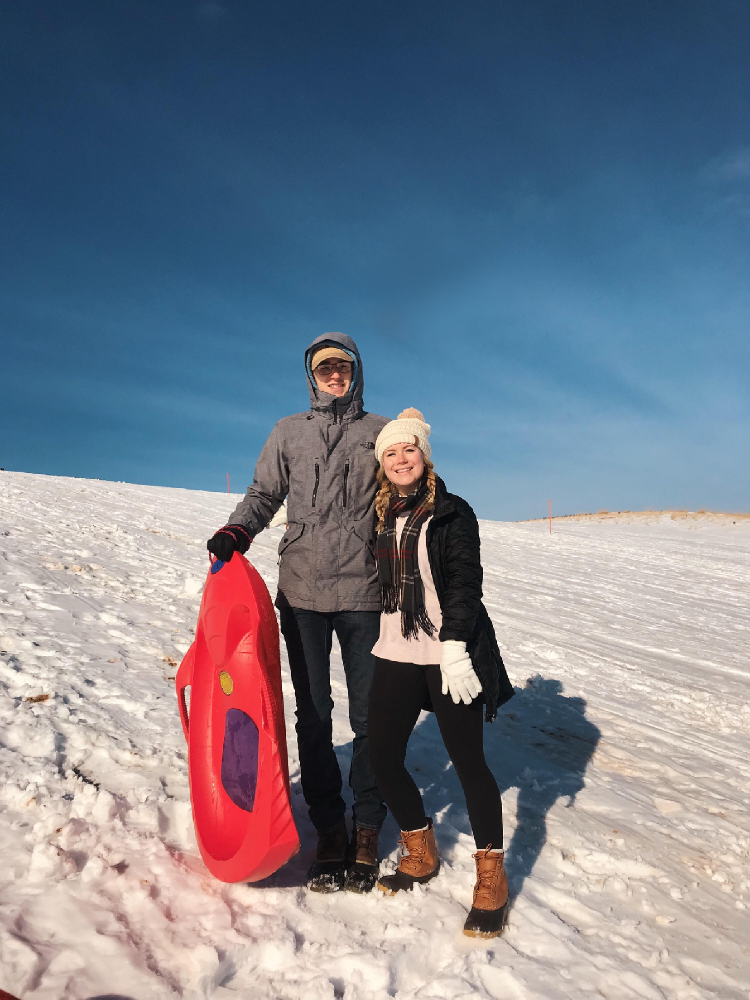

Mathematics, Statistics, and Data Analytics Student

 

I am a junior in the College of Arts and Sciences at Miami University in Ohio where I am currently pursuing a bachelor's degree in
Mathematics & Statistics,
a Co-Major in Predictive Analytics, and a minor in Computer Science. Previously, I graduated from Highlands High School in Fort Thomas, Kentucky. Beyond
academics, I have a great interest in data science and do a fair amount of data work in my free time. I also hope to combine my professional career with
service to my community in any way possible.
Data Analysis/Manipulation: R and RStudio (advanced), Python (advanced), SAS, SPSS, SQL, JMP
Data Visualization: RStudio, Tableau, Power BI
Data Architecture: Java (advanced), Google Cloud, C++, Hadoop, Hive
General: MS Office – PowerPoint, Word, Excel (advanced)
ASA Data Expo 2018 - Second Place Finish - Summer 2018
• Click here to see the end product 'shiny app' in R that
represents a semester long project put together by a group including my proffesor Dr. Tom Fisher and
collegues Robbert Garett, Ryan Estep, and Nichole Rook. The prompt for the challenge was to provide insight and analysis on weather forecasts based on a
data set provided along with other data you can gather. We decided upon bringing in far more forecasts and observed weather than what was provided and
visualized the information with an R package my collegue Robert wrote called
ggvoronoi. I then presented this project at the 2018 Joint Statistical Meetings in
Vancouver as the only undergraduate participant, where we placed second best and were thus invited to submit our project to be published in the Springer
journal Computational Statistics.
Speedway LLC - Purchasing and Services Analytics Intern - Summer 2018
• Conducted analysis on routine spending to find avenues to optimize department spending.
• Used Excel Macro programming to organize and streamline invoices in a reliable database to outline monthly spending on Waste Removal, C02, and Pest
Control Services.
• Created Power BI visualizations to organize and understand monthly Waste Removal spending.
UMC Food Ministry/AmeriCorps - Kitchen Supervisor/AmeriCorps Member - November 2015 to August 2017
• AmeriCorps Member - A voluntary civil society program funded by the U.S. federal government with the goal of "helping others and meeting critical
needs in
the community. Completed a 300-hour 10-week program aimed towards feeding underprivileged adolescents in my community.
• Kitchen Supervisor - Organized and led a kitchen that produced around 4,500 meals a week. Responsible for creating driver schedules and maintaining
stock.